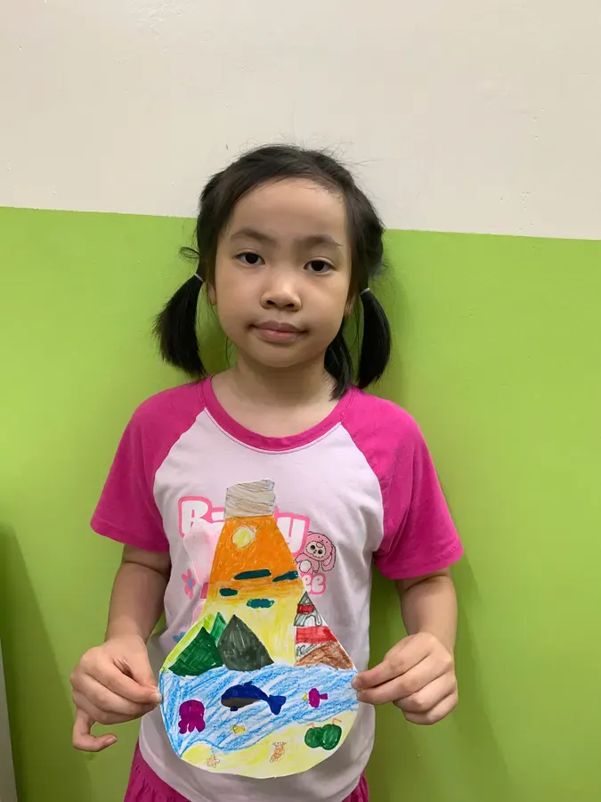

English Classes for Kids in Đống Đa, Hanoi: 5 Centers Compared, Kindergarten to Grade 12 (2026)
Class size, teachers, curriculum, real monthly fees — and the questions that let you check any center yourself before you pay.

- Between 2025 and 2030, Vietnam is making English compulsory from Grade 1 nationwide (Decision 2371/QĐ-TTg).
- In Hanoi, English is the third subject in the public Grade 10 entrance exam for the 2026–2027 school year (multiple choice, 60 minutes).
- Five questions to ask any center: maximum class size, who actually teaches, curriculum and roadmap, how fees are charged, and how progress is measured.
- Around Đống Đa you'll find international brands (British Council, ILA, Apollo), a long-running children's network (PoPoDoo) and small-class centers such as HEC.
- HEC: max 12 students per class, two 90-minute sessions a week, 210,000 VND per session (about 1.68–1.89 million VND a month), billed per session held.
In this article
Why the 2026–2027 school year matters
Whether you're a Vietnamese family or an international family living in Hanoi, three policy changes make the choice of an English program more important this year.
1. English becomes a “second language” in Vietnamese schools
On 27 October 2025, the Prime Minister signed Decision 2371/QĐ-TTg, approving the project “Making English the second language in schools, 2025–2035, with a vision to 2045”. For 2025–2030 it sets two targets:
- every general-education school in Vietnam teaches compulsory English from Grade 1;
- every kindergarten in cities and well-resourced urban areas has the conditions for children to get familiar with English.
In practice, the gap between children who start Grade 1 with some English and those who don't will show up earlier. The sensible goal isn't a race — it's for your child to arrive at Grade 1 confident and used to hearing and speaking English.
2. English is the third subject in Hanoi's Grade 10 exam
For the 2026–2027 public, non-specialized Grade 10 entrance exam, Hanoi chose a foreign language as the third subject, alongside Math and Literature. The language paper is multiple choice, 60 minutes, mostly on the Grade 9 syllabus. The third subject is announced each year, so families with children in Grades 8–9 should watch for the 2027–2028 announcement.
3. The value of international certificates is shifting
In the 2026 high-school graduation exam, students with IELTS 4.0 or above were exempt from the foreign-language paper. For university admission, the 2026 rules cap bonus points for language certificates at 1.5, and a draft for 2027 proposes removing them. We cover this in detail in IELTS classes in Đống Đa: centers, fees and the 2026–2027 rules.
English is moving from “bonus” to core skill. The right investment is helping your child actually use English — reading, writing clearly, speaking with confidence. Exams then take care of themselves.
5 things to check before choosing a center
We suggest asking every center these five questions — including us.
1. What is the maximum class size — as a number?
Every center says “small classes”. Ask for the number. Simple arithmetic: split evenly, a 90-minute lesson gives each child about 7.5 minutes in a class of 12, but only about 4.5 minutes in a class of 20. For young learners, that's the difference between having pronunciation corrected every lesson and barely at all.
2. Who actually teaches, and are they a trained teacher?
A native accent is not the same as teaching skill. Ask which teaching qualification the teacher holds, whether they teach your child's class for the whole course, and whether there's a teaching assistant.
3. Does the curriculum have measurable goals?
International textbooks (National Geographic, Oxford, Cambridge) are a good start. What matters more is a concrete target for each level — for example “reads 70–90 words per minute at 95% accuracy” rather than “makes clear progress”.
4. Per session or the whole course upfront? Any hidden fees?
Convert everything to a price per teaching hour, then ask: do you pay the whole course upfront or monthly, what happens if you pause or leave, and are there book or exam fees?
5. How will you know your child is progressing?
Ask about entry and exit assessments, regular reports and your child's actual work — writing, presentations, videos. A center confident in its teaching will let you sit in on a class.
Watch any 10 minutes and count: how many times does your child speak? Are they called by name, corrected, asked “why”? That number tells you more than any brochure.
5 English centers for kids around Đống Đa, compared
We picked centers with a campus in Đống Đa or along Láng Street — an area families from Đống Đa, Cầu Giấy and Thanh Xuân all reach easily. The table only uses what each center publishes itself.
| Center | Campus near Đống Đa | Ages | Teachers & approach (per website) | Published class size | Published fees |
|---|---|---|---|---|---|
| Happy English Club (HEC) | No. 25, Alley 242 Láng | Age 4 – Grade 12 | US-trained teacher with a teaching degree; project-based learning; National Geographic, Oxford and Cambridge materials | Max 12 | 210,000 VND per 90-min session; IELTS 260,000 VND per 120-min session |
| British Council – Lancaster | Lancaster Luminaire, 1152 Láng | 3–17 | Kindergarten, primary and lower-secondary classes; academic English and IELTS for ages 15–17 | Not stated on campus page | On consultation |
| ILA – Tây Sơn | 324 Tây Sơn | 2.5–16 | 100% foreign teachers with a Vietnamese teaching assistant in every lesson; Cambridge-aligned curriculum | “Small classes” (no number) | Per center; installment plans |
| Apollo English – Láng Hạ | 3C Láng Hạ | Children and teens | In Vietnam since 1994; teachers academically supervised by International House | Not stated on homepage | On consultation |
| PoPoDoo – Đống Đa | 29 Trần Hữu Tước | 3–15 | Network since 2007; combines English with creativity, life values and real-world experiences | Not stated on homepage | On consultation |
← Swipe to see the full table →
Sources: each center's website and official pages, accessed 26 October 2026 (see Sources). “Not stated” means we couldn't find a figure on the page cited — not that the center has no policy.
Happy English Club (HEC)
No. 25, Alley 242 Láng Street, Đống Đa Ward, Hanoi · Zalo 0975 679 889
Classes of at most 12 students, 90 minutes, twice a week. The teacher is US-trained, with a teaching degree and a New Jersey (USA) teaching certificate. Every lesson starts with a “Big Question”; students build projects and present them instead of only filling in workbooks. Fees are published per session and billed for sessions actually held; the Saturday Reading Club is free.
A good fit if: you want a teacher who knows every child, transparent per-session fees, and learning through projects and presentations.
British Council – Lancaster campus
Lancaster Luminaire, 1152 Láng Street, Đống Đa
According to its campus page, the British Council teaches kindergarten and pre-primary (ages 3–6), primary (6–10) and lower secondary (11–14), plus academic English and IELTS preparation for ages 15–17, with a free placement test.
A good fit if: you want a long-established international brand and one pathway all the way to IELTS.
ILA – Tây Sơn
324 Tây Sơn, Đống Đa
ILA runs three pathways — kindergarten (2.5–6), primary (6–11) and secondary (11–16) — on a Cambridge-aligned curriculum (Starters, Movers, Flyers). Its website states 100% foreign teachers with international teaching certificates, a Vietnamese assistant in every lesson, a one-month trial and fees payable in installments.
A good fit if: you want foreign teachers supported by Vietnamese assistants and a Cambridge-certificate track.
Apollo English – Láng Hạ
3C Láng Hạ, Đống Đa
Apollo describes itself as Vietnam's first 100% foreign-owned English school system (since 1994), with international-standard teachers supervised by International House and many campuses.
A good fit if: you need a large network that makes switching campuses easy if you move.
PoPoDoo – Đống Đa
29 Trần Hữu Tước, Đống Đa
PoPoDoo teaches ages 3–15 through age-based programs (such as Kinder Jump for 3–6 and Smart Leaders for 6–11), combining English with creativity, life values and real-world experiences; the network has operated since 2007.
A good fit if: you want a long-running children's center right in Đống Đa.
So which one should you choose?
| If you prioritize… | Consider |
|---|---|
| An international brand and large network | British Council, ILA, Apollo |
| Foreign teachers with Vietnamese assistants | ILA |
| A small class with a stated number (≤12) and per-session fees | HEC |
| Project-based learning, presentations, STEAM in English | HEC |
| A long-running children's center in the area | PoPoDoo |
Wherever you go, bring the checklist above, ask for numbers, and book a trial. Your child will give you the clearest answer after the first lesson.
An English roadmap by age: kindergarten to Grade 12
Every child starts from a different place, so ages are only a guide. At HEC, children are placed by level with a free placement test.
Kindergarten (ages 4–6): listen, imitate, enjoy
At this age the goal is sound and enthusiasm: songs, picture books and games; getting to know letters and sounds; short sentences about themselves. Don't measure grammar. Measure whether your child wants to speak English.

Grades 1–2 (ages 6–8): phonics and reading aloud
This is the phonics stage: blending sounds, high-frequency words, reading short sentences aloud. With English now compulsory from Grade 1, children who already connect sounds to letters walk into class with far more confidence.
Grades 3–5 (ages 8–11): fluent reading, paragraphs, presentations
Children move from learning to read to reading to learn: informational texts, paragraphs with a topic sentence, short presentations. It's also a great age for debate and project work.

Grades 6–9 (ages 11–15): academic grammar and the Grade 10 exam
The focus shifts to controlling tenses and sentence structure, multi-paragraph writing with a clear argument, and reading longer texts. For Hanoi students, Grade 9 is also the year of the Grade 10 entrance exam — for 2026–2027, a foreign language is one of its three subjects.

Grades 10–12 (ages 15–18): academic English and IELTS
This is the right stage for structured IELTS preparation: essay writing, extended speaking, academic reading and timed exam strategy. See the full roadmap and fees in IELTS classes in Đống Đa.
HEC levels and their measurable targets
Each HEC level has published completion criteria:
- Mars · National Geographic Look Starter
Decodes CVC words with at least 90% accuracy; reads aloud at 30–40 words per minute; speaks 6–8 sentences about self and family; writes 4 correct sentences with capitals and spacing. - Venus · National Geographic Look 1
Reads 70–90 words per minute at 95%+ accuracy; writes a 4–6 sentence paragraph with correct punctuation; speaks for 1–2 minutes from picture cues. - Neptune · National Geographic Look 2
No more than 3 past-tense errors per 100 words; answers who/what/why with evidence; writes a cohesive paragraph with topic and closing sentences. - Jupiter · Oxford Discover 1
Reads 120–150 words per minute at 90%+ accuracy; writes an 8–10 sentence paragraph; gives a clearly structured 2-minute poster talk. - SKY 1 · Oxford Discover 3
Summarizes a ~300-word article into 5–6 bullet notes; presents for 3 minutes; writes a report with a clear introduction, body and conclusion. - Sanrio Grade 6 · Grammar & Writing G6
85%+ grammar accuracy in edits; 2–3 paragraphs (180–220 words) with a thesis and support; a 2-minute evidence-based speech. - Sun · IELTS
Target band 5.5–7.0; Task 2 of 250+ words in 40 minutes; sustains a coherent 3–4 minute speaking interview.
There's also Mercury, Cambridge Math taught in English, for students who want math reasoning and math vocabulary together.
What English classes for kids cost per month
It's the question parents ask most — and the information many centers don't publish. HEC publishes it: 210,000 VND per 90-minute session. Standard classes meet twice a week (3 hours a week), so about 8–9 sessions a month.
| Sessions in the month | Standard class fee |
|---|---|
| 8 sessions (a month with a holiday) | 1,680,000 VND |
| 9 sessions | 1,890,000 VND |
| Per teaching hour | 140,000 VND |
- Billed for sessions actually held each month — no upfront course fee, no hidden costs.
- 5% sibling discount.
- No book fees at present.
- Placement test and trial class: free.
- Saturday Reading Club (14:00–16:00): free, all ages.
- Convert to a price per teaching hour (total fee ÷ total hours).
- Add book, exam and materials fees, if any.
- Ask how far ahead you pay and what the pause/refund policy is.
- Then put the cost next to the class size: at the same price, a class of 12 and a class of 20 are different experiences.
Proof, not promises: real HEC classes
We think parents should be able to see how their children learn, not just read slogans. These videos were filmed in class — no script, no staging.
Grade 4 students debate in English
An ordinary lesson: students take a position, listen to the other side and respond — entirely in English. This is what “students talk more than the teacher” really looks like.
Campers talk about Summer 2026
HEC's 2026 summer camp had 21 students. At the end, every family received a private journal page: a highlight film, a curated photo gallery, the child's own reflection video and a bilingual written assessment from the teacher. See more on the HEC Summer Camp 2026 page.


Book a free trial class
A short placement test, one real lesson, and you count how often your child speaks. No commitment, no pressure.
Message on Zalo: 0975 679 889 Call usFrequently asked questions
What age should my child start English classes at a center?
There is no single ideal age. For 4–5-year-olds the goal is listening, imitating and enjoying English, not grammar. HEC takes students from age 4 to Grade 12 and places them by level with a free placement test.
How many English classes a week are enough?
Consistency matters more than volume. HEC's standard classes meet twice a week for 90 minutes (3 hours a week), combined with reading at home and the free Saturday Reading Club.
How much do English classes for kids cost in Hanoi per month?
Fees vary and many centers do not publish them. At HEC it is 210,000 VND per 90-minute session; at two sessions a week (8–9 per month) that is about 1,680,000–1,890,000 VND a month, billed only for sessions actually held.
Should I choose a foreign teacher or a Vietnamese teacher?
Nationality does not determine teaching quality. Ask whether the teacher holds a teaching degree or certificate, whether they teach your child's class consistently, and how many students are in the class.
Does a small class really make a difference?
Yes. Split evenly, a 90-minute lesson gives each child about 7.5 minutes in a class of 12, but only about 4.5 minutes in a class of 20. Small classes also mean pronunciation and writing get corrected more often.
How can I tell whether my child is making progress?
Ask for measurable targets for each level, regular reports and permission to observe a class. HEC sends monthly progress reports, updates parents on Zalo and welcomes classroom visits.
Where is Happy English Club and when are classes held?
HEC is at No. 25, Alley 242 Láng Street, Đống Đa Ward (formerly Thịnh Quang Ward, Đống Đa District), Hanoi. Classes run on weekday evenings and weekends; message 0975 679 889 on Zalo for the current timetable.
Sources
- Thư Viện Pháp Luật — Decision 2371: roadmap for making English the second language in schools (29 Oct 2025, in Vietnamese).
- Nhân Dân — Hanoi picks a foreign language as the third Grade 10 exam subject for 2026–2027 (29 Jan 2026, in Vietnamese).
- VnExpress — 2026 university admission rules tighten IELTS bonus points (15 Feb 2026, in Vietnamese).
- British Council — Lancaster Luminaire teaching centre, Đống Đa.
- ILA Vietnam — Cambridge English for kids.
- Apollo English — apollo.edu.vn.
- PoPoDoo English — popodooenglish.edu.vn.
- Happy English Club — program pages and fees.